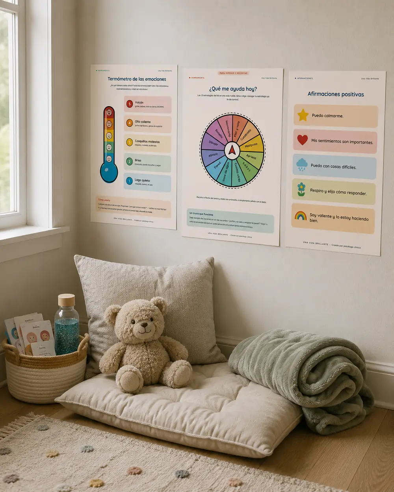
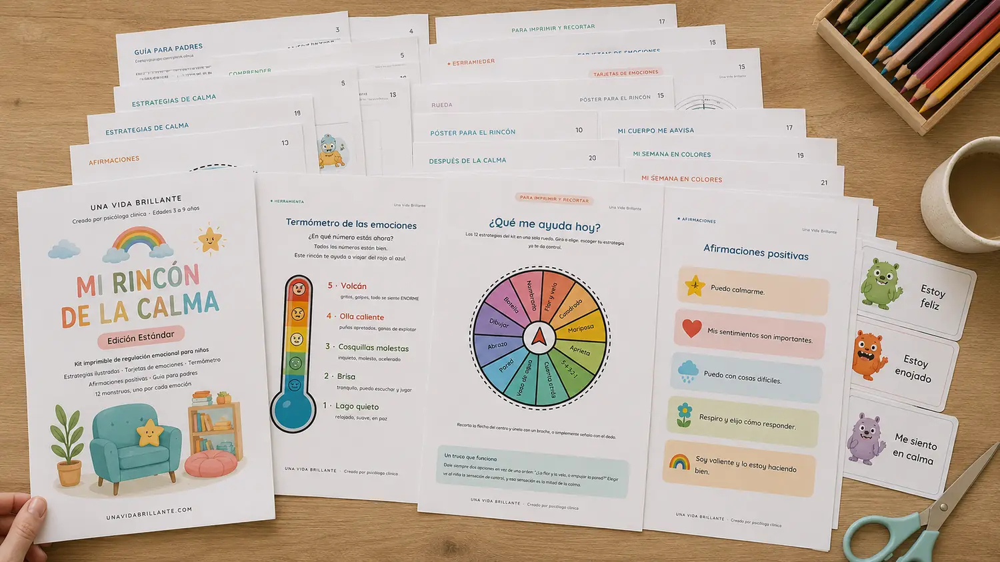
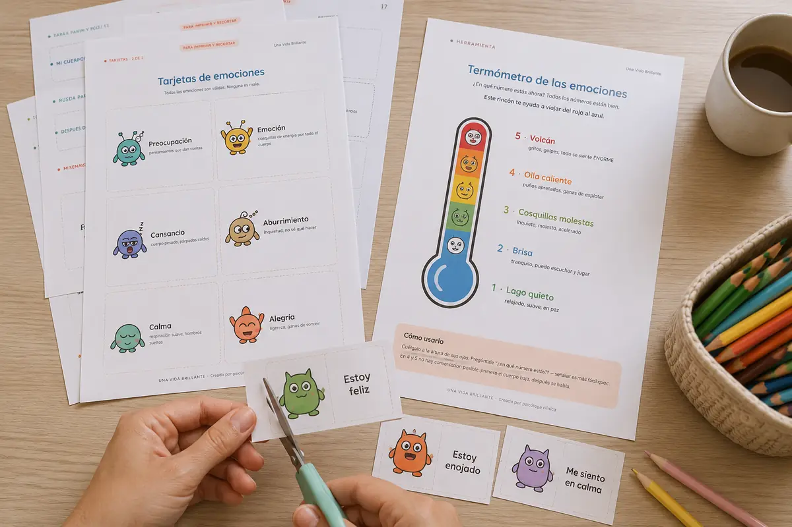
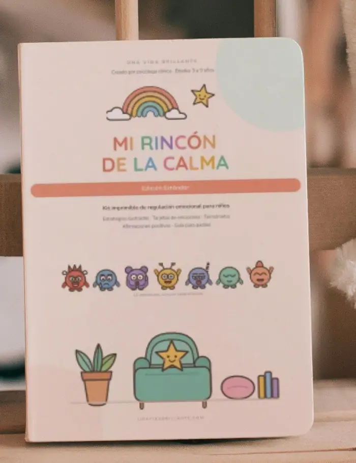

Ya sabes exactamente cómo empieza.
Un zapato que no entra. Un hermano que le quitó algo. Un «no» tuyo a las siete de la tarde.
Y de pronto ya está en el suelo. Gritando. Y tú de pie, con la cena a medias, diciéndole cosas que no sirven:
«Cálmate.»
«No es para tanto.»
«Respira.»
«Si sigues así nos vamos.»
Nada aterriza. La cosa sube. Y llega el momento que más odias: levantas la voz.
Funciona. Se calla. Y quince minutos después está dormido y tú sigues despierta, mirando el techo, pensando «no quiero ser esta mamá».
No es que seas mala madre. Es que estás intentando enseñarle a nadar en medio de la tormenta.
No te falta paciencia. Te falta la herramienta.
Lo que la mayoría intentamos, falla por una razón concreta:
«Cuenta hasta diez.»
Cuando un niño está desbordado, la parte pensante de su cerebro está literalmente fuera de servicio. No es que no quiera obedecer: en ese momento no puede procesar instrucciones.
La silla de pensar.
Lo deja solo con una emoción que todavía no sabe manejar, y le enseña que sentir enojo tiene consecuencias. Aprende a esconderlo, no a atravesarlo.
Explicarle por qué no debe enojarse.
Las palabras entran cuando el cuerpo ya bajó. Antes, no. Estás hablándole a alguien que no está en casa.
Y aquí está la pieza que falta:
La calma no se enseña durante la crisis. Se entrena antes, en frío, cuando todo está tranquilo — igual que un simulacro de incendio.
Eso es exactamente lo que hace este kit.
Un rincón. Doce estrategias. Un plan de cuatro semanas.
Mi Rincón de la Calma convierte una esquina de tu casa —un cojín, una manta, un peluche— en el lugar al que tu hijo va cuando algo se siente demasiado grande.
No es un castigo. No es el rincón de pensar. Es un espacio con herramientas visuales colgadas a la altura de sus ojos, donde tu hijo aprende, contigo al lado, la habilidad más importante de la infancia: volver a la calma por sí mismo.
Y no lo tienes que inventar tú. Está todo diseñado, ilustrado y listo para imprimir.

21 páginas · 13 materiales
Las 21 páginas, una por una

-
01
El Termómetro de las Emociones
Cinco niveles con nombre e ilustración: Lago quieto, Brisa, Cosquillas molestas, Olla caliente, Volcán. Deja de preguntar «¿qué te pasa?» y empieza a preguntar «¿en qué número estás?». Es la diferencia entre un niño que no sabe explicarse y uno que te señala un número.
-
02
Doce estrategias de calma ilustradas
Flor y Vela · Respiración del Cuadrado · Abrazo de Mariposa · Aprieta y Suelta · 5-4-3-2-1 · Cuenta Regresiva · Vaso de Agua · Empuja la Pared · Abrazo Fuerte · Dibuja tu Emoción · Botella de la Calma · Ponle Nombre.
Doce, no una: porque el niño al que la respiración lo enoja más necesita empujar una pared, y ahora tienes las dos opciones.
-
03
Doce tarjetas de emociones con sensación corporal
Enojo («fuego en el pecho»), Miedo («mariposas frías»), Vergüenza («calor en la cara»)… Cada emoción con el nombre y con dónde se siente. Así aprende a identificarla antes de que lo tumbe.
-
04
La ruleta «¿Qué me ayuda hoy?»
Recorta, pon un broche y listo. Elegir su propia estrategia le devuelve la sensación de control — que es justo lo que perdió durante el desborde.
-
05
Póster «Mi Rincón de la Calma»
El cartel para la pared, con las tres reglas del rincón escritas para él.
-
06
«Mi cuerpo me avisa»
Las cinco señales tempranas: calor en la cara, corazón rápido, nudo en la panza, puños apretados, ganas de llorar. Cuando las reconoce a tiempo, calmarse deja de ser una batalla.
-
07
Dos hojas «Después de la calma»
Una para 3–5 años (para rodear y dibujar, junto a ti) y otra para 6–9 años (para escribir). La conversación que sí sirve, en el momento en que sí sirve: después.
-
08
Ocho tarjetas de afirmaciones
«Puedo sentir cosas grandes y estar a salvo.» · «Las emociones son como nubes: llegan y se van.» · «No soy mi enojo. Soy quien aprende a calmarlo.»
Para leer en voz alta. Su propia voz también lo calma.
-
09
«Mi semana en colores»
Un registro semanal —mañana, tarde y noche— para marcar con el color del termómetro. En tres semanas vas a ver un patrón que hoy no ves: a qué hora, qué día, después de qué.
-
10
La Guía para Padres
Cómo montar el rincón, cómo presentarlo (esto define si funciona o no), qué decir exactamente en plena crisis, y los tres errores que arruinan el rincón el primer día.
-
11
«Por qué funciona»
La explicación clínica, en dos minutos y sin jerga, de qué está haciendo cada estrategia en el cuerpo de tu hijo. Para que no las apliques a ciegas.
-
12
Tu Plan de 4 Semanas
El calendario semana por semana. Qué hacer la semana 1 (nada de crisis todavía), la 2, la 3 y la 4. Sin esto, la mayoría abandona el día seis.
-
13
«Cuándo no funciona»
Qué hacer si se niega a ir al rincón, si respirar lo enoja más, si parece que «no te hace caso» — y en qué momento esto ya no basta y toca buscar ayuda profesional.
Descarga inmediata · Garantía de 30 días
Esto no son ideas sueltas de Pinterest.
Cada estrategia del kit está elegida por lo que hace en el sistema nervioso de un niño:
Exhalar largo, no respirar hondo.
La exhalación prolongada activa el nervio vago y enciende el freno natural del cuerpo. Por eso «sopla la vela despacio» calma, y «respira hondo» muchas veces no hace nada.
Empujar, apretar, abrazar fuerte.
La presión profunda organiza el sistema nervioso y le da a la energía del enojo una salida segura. Para muchos niños el cuerpo tiene que ir antes que el aire.
Anclar en los sentidos.
5-4-3-2-1, el vaso de agua fría: sacan al niño del modo alarma y vuelven a encender la parte pensante de su cerebro.
Ponerle nombre.
Nombrar la emoción baja su intensidad. Por eso «estoy sintiendo enojo» funciona mejor que «no estés enojado».
Kit desarrollado por una psicóloga clínica, sobre principios básicos de regulación emocional y desarrollo. Es una herramienta de acompañamiento; no sustituye la evaluación ni el tratamiento de un profesional de salud mental.
Esto no va a funcionar el lunes.
Te lo digo antes de que pagues, no después.
Calmarse es una habilidad, no un interruptor. Se entrena, como amarrarse los zapatos. La primera vez que le ofrezcas el rincón en plena crisis, es probable que te diga que no. Eso es normal y está previsto en el kit.
Por eso adentro tienes un plan de cuatro semanas, no una hoja suelta:
-
Presentar en calma.
Montan el rincón juntos. No se usa en crisis todavía. Juegan a nombrar emociones con las tarjetas.
-
Practicar en verde.
Ensayan dos estrategias cuando está tranquilo, como juego. Se entrena antes de necesitarlas.
-
Acompañar en crisis.
En el próximo desborde, tú lo llevas y regulan juntos. Sin exigir, sin castigo.
-
Hacia la autonomía.
Empieza a ir solo, o a pedirlo.
Si buscas que tu hijo deje de hacer berrinches mañana, este kit te va a decepcionar y prefiero que no lo compres.
Si estás dispuesta a darle un mes, cambia la casa.
Descarga inmediata · Garantía de 30 días
Quién hizo esto
Soy psicóloga clínica. También soy mamá.
Este kit no nació en un consultorio: nació en mi propia casa, con mi propio hijo en el suelo y yo respirando en la cocina antes de volver a entrar.
Durante años expliqué estas herramientas una por una, en sesión, a madres que salían con apuntes en una servilleta. Un día me di cuenta de que estaba explicando siempre lo mismo, y que todas se iban con la misma pregunta: «¿y esto no está en algún lado ya hecho?».
Ahora sí lo está. Es esto.
Una Vida Brillante

Para quién sí y para quién no
Este kit es para ti si:
- Tienes un hijo de entre 3 y 9 años
- Los desbordes en tu casa terminan en gritos —suyos, tuyos, o los dos—
- Ya intentaste «cuenta hasta diez» y la silla de pensar, y sabes que no funcionan
- Quieres algo listo para imprimir, no otro libro de 300 páginas que no vas a leer
- Estás dispuesta a acompañarlo cuatro semanas
Este kit no es para ti si:
- Buscas que se porte bien de inmediato sin que tú cambies nada
- Esperas usarlo como castigo («vete a tu rincón»)
- Tu hijo tiene desbordes muy intensos o muy frecuentes para su edad y todavía no lo ha visto un profesional — en ese caso, esto acompaña, pero primero busca evaluación
- No tienes cómo imprimir ni acceso a una papelería
La oferta
Lo que cuesta
Una sola sesión de psicología infantil cuesta entre $50 y $90 USD, y de ahí normalmente sales con dos o tres de estas herramientas anotadas a mano.
Aquí tienes las 21 páginas completas, ilustradas y listas para imprimir:

$17USD
Pago seguro a través de Hotmart · Recibes el PDF en tu correo en menos de 2 minutos · Formato A4 y Carta
- Pago seguro
- Descarga inmediata
- Garantía de 30 días
Si no te sirve, no lo pagas.
Tienes 30 días desde tu compra para escribirme y pedir la devolución completa. No tienes que explicarme por qué. No te voy a pedir que demuestres nada.
Prefiero devolverte $17 antes que tener a una mamá con un PDF que no le sirvió.
Devolución gestionada directamente por Hotmart.
Lo que cuentan otras madres
Lo que pasó en otras casas
«El tercer día fue solo a sentarse. No me dijo nada, solo fue. Casi lloro.»
— Mamá de Mateo, 5 años
«Lo que más me sirvió no fue para él, fue la hoja de las frases. Yo ya no grito primero.»
— Mamá de Sofía, 7 años, y Emilia, 4
Preguntas frecuentes
¿Cómo lo recibo?
Es un archivo digital. Apenas se confirma tu pago, Hotmart te envía el PDF a tu correo. No se envía nada físico.
¿Necesito impresora a color?
Sí, funciona mucho mejor a color porque los niños usan el color para identificar el nivel del termómetro. Si no tienes impresora, llévalo a una papelería: imprimir las 21 páginas a color cuesta muy poco y quedan mejor.
¿Cuántas veces puedo imprimirlo?
Las que quieras, siempre, para los hijos que tengas. Solo es para uso familiar, no para revender ni repartir.
¿Sirve para un niño de 3 años?
Sí. Las estrategias y las tarjetas funcionan desde los 3 con tu acompañamiento, y hay una hoja de reflexión hecha específicamente para 3–5 años (solo dibujar y rodear).
¿Y si mi hijo tiene 10?
Está diseñado hasta los 9. A partir de ahí muchos niños sienten las ilustraciones «de bebés». El termómetro y las estrategias les siguen sirviendo, pero no te lo prometo como hecho para su edad.
Mi hijo tiene TDAH / está en evaluación por autismo. ¿Le sirve?
Muchas de estas estrategias son las mismas que se usan en esos contextos, y varias familias las encuentran útiles. Pero este kit no es un tratamiento ni está adaptado a un diagnóstico específico: úsalo como apoyo y sigue lo que te indique el profesional que lo atiende.
¿Tengo que estar yo presente?
Las primeras semanas, sí. Esa es justamente la parte que funciona. Hacia la semana 4 empieza a ir solo.
¿Y si no funciona?
Tienes 30 días para pedir la devolución completa, sin explicaciones.
Esta noche va a haber otro berrinche.
La diferencia es si te agarra otra vez con las manos vacías — o con un rincón preparado, doce estrategias en la pared y cinco frases que sí sabes decir.
$17USD
Descarga inmediata · Garantía de 30 días · Lo imprimes para siempre
PD.
Si nada de esto te convence, quédate al menos con esto, que es gratis y es lo más importante de todo el kit: antes de corregirlo, regúlate tú. Baja el tono, afloja la cara, respira tú primero. El sistema nervioso de tu hijo se sincroniza con el tuyo. Los niños copian lo que ven, no lo que se les ordena.
Si eso solo ya te sirvió, imagínate las otras veinte páginas.
Descarga inmediata · Garantía de 30 días